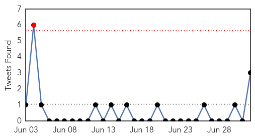
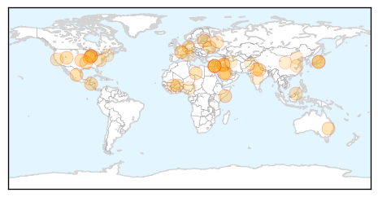

30 Day Trends
Web: 0 alerts, 0 warnings
Twitter: 1 alerts, 0 warnings
Top Articles:
- 0.917
- Chicago Tribune
- 0.917
- Chicago Tribune
- 0.917
- Chicago Tribune
- 0.917
- Chicago Tribune
- 0.917
- Chicago Tribune
- 0.917
- Chicago Tribune
- 0.917
- Chicago Tribune
- 0.917
- Chicago Tribune
- 0.917
- Chicago Tribune
- 0.917
- Chicago Tribune
- 0.917
- Chicago Tribune
- 0.917
- Chicago Tribune
- 0.917
- Chicago Tribune
- 0.917
- Chicago Tribune
- 0.917
- Chicago Tribune
- 0.866
- A fire-fighting aircraft works to obtain control over a forest fire raging near the Israeli village of Aminadav
- 0.866
- Russia's PM sees "full-scale" gas crisis with Kiev by autumn
- 0.866
- Benghazi suspect to remain in U.S. custody, judge orders
- 0.866
- Israeli police crime scene investigators carry evidence in the Jerusalem Forest
- 0.841
- Brucellosis infections spark warning for dog owners
- 0.814
- Annual drinking water quality report release
- 0.786
- Over 50 take ill after drinking contaminated water
- 0.774
- Free Malaysia Today
- 0.764
- Clean bill of health after JE scare
- 0.742
- Parents Concerned As Grant High Tuberculosis Investigation Draws To Close « CBS Sacramento
- 0.724
- Norovirus infections force Waco VA hospital to cancel July 4 event, stop admissions
- 0.712
- Latvia may declare emergency over swine fever
- 0.674
- Drug Resistance and Malaria in Mali
- 0.634
- Global health and the US Centers for Disease Control and Prevention
- 0.615
- African swine fever threatens Latvian pork
- 0.589
- The time to act against Tuberculosis is now
- 0.584
- Doctors’ strike paralyses services nationwide
- 0.558
- 'Stay calm before test results are out!'
- 0.553
- HHS Launches New Aging Brain Health, Alzheimer's Guide
- 0.547
- UN humanitarian chief voices concern over worsened situation in Iraq
- 0.541
- Japan to lift some sanctions on North Korea
- 0.541
- Sarkozy’s political ambitions dim amid corruption allegations
- 0.541
- Son-in-law retracts confession in Monaco heiress killing
- 0.541
- Palestinian youth killed in suspected revenge attack
- 0.541
- Palestinians react with indifference to murder of Israeli teens
- 0.541
- Beset by legal woes, Sarkozy blasts ‘political ends’
- 0.541
- French firms look to conquer Iran
- 0.541
- State of emergency proposed in Latvia in area hit by African swine fever :: The Baltic Course
- 0.519
- Under-Secretary-General for Humanitarian Affairs and Emergency Relief Coordinator, Valerie Amos statement on Iraq [EN/AR] - Iraq
- 0.512
- Maharashtra govt ropes in contractual doctors
- 0.505
- Tummy troubles: HMC catches over 100,000 gastro cases in three months
Top Tweets:
- 0.675
- “@WHO: On 22 June 2014 Iran reported an additional laboratory-confirmed Middle East respiratory syndrome case MERS”
- 0.540
- RT: On 25 and 27 June 2014 SaudiArabia reported additional 3 cases of Middle East respiratory syndrome MERS
- 0.506
- RT: Globally 824 lab-confirmed MERS cases incl at least 286 related deaths have officially been reported to WHO
Web/News Articles

Tweets
Article Locations
Article Confidences